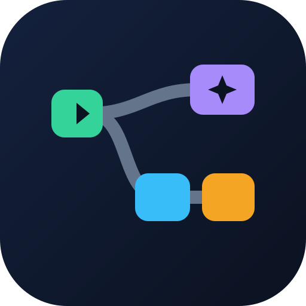

This app needs JavaScript.

Build and troubleshoot reliable multi-step AI agents for SCADA and industrial automation work — pump stations, district cooling, water treatment and more.
Works offline once installed. Workflows are stored only on this device (export JSON to share). Generated code uses stubs for your OPC UA / historian / CMMS integrations and defaults to DRY RUN for write actions. Keep safety interlocks in the PLC — never rely on an AI agent for protection.
Prepared for automation engineers working with AGAC-style SCADA / PLC / DCS projects — agac.ae. This is an independent tool, not an official product of Al Gurg Automation.